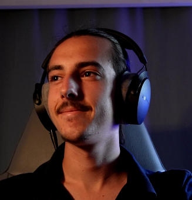

Titre du Projet
RÔLE
Direction Artistique
OUTILS
Figma
Texte narratif...
DIRECTEUR ARTISTIQUE & DESIGNER MULTIMÉDIA

Je m'appelle Mathis et je suis actuellement étudiant en BUT MMI. Explorateur de
l'univers digital, je suis constamment à l'affût de nouvelles opportunités :
Je suis activement à la recherche d'un stage, d'une
alternance ou de toute collaboration pour exprimer ma créativité et apprendre à vos
côtés.
Mode d'emploi
L'exploration de ce portfolio s'effectue sur une navigation verrouillée.
Utilisez la molette de votre souris ou les flèches de votre
clavier pour passer d'un écran à l'autre en toute fluidité. Bonne visite !
Réalisés au sein de l'IUT, individuellement ou en groupe.
Créations libres et expérimentations visuelles.
"Ma curiosité, mon moteur."
Passionné par la vidéo et l'écriture et expert en informatique, je construis des expériences numériques où la performance rencontre l'élégance. Mon approche ? Un mélange de rigueur technique et d'une curiosité insatiable pour le "comment ça marche" qui s'immisce dans tous mes projets, et je l'espère dans le vôtre !
Direction Artistique
Figma
Texte narratif...